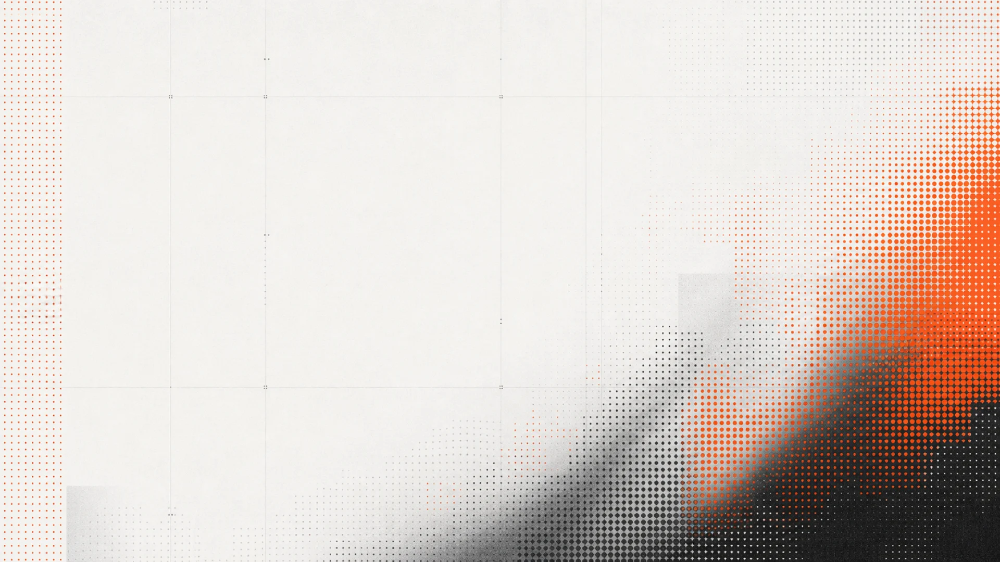

Một kỷ luật Kỹ thuật Phần mềm mới cho Kỷ nguyên Agent.A New Software Engineering Discipline for the Agent Era.
AI Engineer = người viết prompt tốt + gọi API modelGreat prompts + model APIs
Software Engineer = người thiết kế orchestration layer, evaluation systems, memory, verification mechanisms cho AI agents hoạt động hiệu quả.Engineers design orchestration, evaluation, memory, and verification so agents work reliably in production.
Chương trình SE truyền thống tập trung vào kỹ năng cá nhân xây dựng phần mềm theo từng bước.Individual skills to build software step by step.
Kỹ sư hiện đại cần thêm khả năng thiết kế hệ thống nơi con người và AI agents cộng tác hiệu quả.Modern engineers orchestrate human–agent collaboration at scale.
Thiết kế hệ thống phát triển phần mềm có hỗ trợ AI.Design AI-assisted software development systems.
Đánh giá chất lượng và độ tin cậy của đầu ra do AI tạo.Measure quality and reliability of AI-generated outputs.
Vận hành hệ thống AI trong môi trường phát triển phần mềm thực tế.Operate AI systems in real-world software development.
Nắm cách agents hoạt động, nhận diện giới hạn và phân tích failure patterns.Agent behavior, limits, and failure patterns.
Quy trình dev có AI, orchestration và human-agent collaboration.AI-assisted processes, orchestration, collaboration.
Project memory, context và agent-readable repositories.Memory, context, agent-readable repos.
Đánh giá outputs, acceptance criteria, QA workflows.Evaluate outputs, criteria, QA workflows.
Cải thiện độ tin cậy, thiết kế feedback loops và tích hợp human review.Improve reliability, feedback loops, and human review integration.
Xây dựng tư duy Harness Engineering và thiết kế workflow AI từ đầu.Harness mindset and AI workflow design from day one.
LO: Hiểu vì sao AI cần Harness — không chỉ model tốt.Understand why AI systems need harnesses, not just better models.
LO: Thiết kế quy trình phát triển phần mềm có hỗ trợ AI.Design AI-assisted software development workflows.
Tổ chức codebase cho AI và đo lường chất lượng output một cách khoa học.Agent-ready repos and rigorous output measurement.
LO: Xây repositories tối ưu cho AI collaboration.Build repositories optimized for AI collaboration.
LO: Đo lường và cải thiện chất lượng output do AI tạo.Measure and improve AI-generated outputs.
Vận hành Agent runtime và xây hệ thống AI đáng tin cậy trong production.Agent runtime and trustworthy AI systems in production.
LO: Nắm hạ tầng hỗ trợ AI agents trong phát triển phần mềm.Understand infrastructure supporting AI agents in software development.
LO: Thiết kế hệ thống AI đáng tin với human oversight phù hợp.Design trustworthy AI systems with appropriate human oversight.
2 buổi/tuần × 3 giờ = 48 giờ. Thực hành gắn từng module.2 sessions/week × 3 hours = 48 learning hours total.
Không lecture thuần — workshop, thảo luận nhóm, problem-solving.No pure lectures — hands-on workshops and group problem-solving.
AI tools, agent frameworks, evaluation systems thực tế.Real AI tools, agent frameworks, and evaluation systems per module.
Phối hợp thiết kế AI systems trong đội xuyên suốt khóa.Collaborative AI system design throughout the program.
Trình bày Software Development Harness trước hội đồng & doanh nghiệp.Present your harness to faculty and industry partners.
Thiết kế & implement Software Development Harness hoàn chỉnh.Design and implement a complete Software Development Harness.
Không chỉ generate code bằng AI — mà xây môi trường phát triển phần mềm đáng tin cậy.Not just generating code with AI — building a reliable AI-assisted software engineering environment.
Quy trình dev có AI: routing, human checkpoints, automation.Task routing, human checkpoints, automation rules.
AGENTS.md, structured context, knowledge organization.AGENTS.md, structured context, knowledge organization.
Lưu context, quyết định thiết kế, lịch sử dự án cho agents.Context, design decisions, and project history for consistent agents.
Rubrics, benchmarks, automated testing cho code/design AI.Rubrics, benchmarks, and automated testing pipelines.
Validate output AI trước merge — guardrails cho mã nguồn.Validate AI outputs before merge — guardrails for AI-generated code.
Điểm can thiệp con người & quy trình review trong human-AI workflow.Human intervention points and effective review in human–AI workflows.
Kỹ năng tiên phong trong kỷ nguyên AI Agent.Future-ready skills for the Agent Era.
Áp dụng AI vào SE thực tế, không chỉ lý thuyết.Apply AI to real software engineering, not theory alone.
Sinh viên & lab đang khám phá AI trong phát triển PM.Students and labs actively exploring AI in software development.
Tích hợp AI có hệ thống, đáng tin vào dự án tốt nghiệp.Integrate AI reliably and systematically into graduation projects.
HESD tạo giá trị cho sinh viên, Khoa và FPT University.Value for students, the Faculty, and FPT University.
Đây là lớp expertise mới — từ Prompt Engineering tới Harness Engineering.A new layer of software engineering expertise — beyond Prompt Engineering, to Harness Engineering.
Không phải ai dùng AI tốt nhất thắng — mà ai xây môi trường AI đáng tin cậy.Winners build reliable environments for AI — not just better prompts.
HESD định vị FPT tiên phong đào tạo Harness Engineering cho Software Developers.HESD positions FPT as a pioneer in formal Harness Engineering education.
Ra khỏi HESD, sinh viên xây hệ thống để AI làm việc đáng tin — không chỉ dùng tools.Graduates build systems for trustworthy AI work — beyond using AI tools.